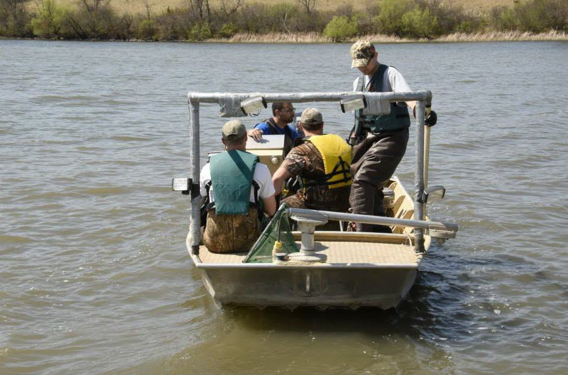

<section class="content-section-a" id="labgroup">
  
  <div class="container">
    
    <div class="row">
      <div class="col-lg-8 ml-auto">
        <hr class="section-heading-spacer">
          <div class="clearfix"></div>
            <h2 class="section-heading">Teaching & Mentoring</h2>
              <p class="lead">I take great pleasure sharing my passion and knowledge of aquatic ecosystems with young scientists before they advance as natural resource professionals. My proudest moments originate from my role as a mentor to several graduate and undergraduate students. I epitomize the excellent guidance I received during my education and feel that it is my responsibility to provide each student with an opportunity for success. In addition to teaching coursework in fish ecology, fisheries management, limnology, ichthyology, field techniques, and introductory biology courses, I have been fortunate to have numerous opportunities to incorporate young scientists into my research program. These students have been responsible for research that has greatly improved our understanding of aquatic ecosystems and the ecology of several aquatic taxa. <br>
                <b>Witnessing the numerous accomplishments of my students are among the most rewarding experiences I’ve had in my professional career! </b></p> <br>
                <p class="lead"> Click the box below to learn more about the research my undergraduate mentees have conducted.</p>
                  <li class="list-inline-item">
                    <a href="undergrads.html" class="btn btn-dark btn-lg"><span class="network-name">Undergraduate lab group</span></a>
                      </li>
                      <br>
                      </div>
                      <div class="col-lg-4 mr-auto align-self-center">
                        
                          <center><h7> Past undergraduate mentees with their American Fisheries Society awards</h7></center>
                          <br>
                          <br>
                             
                            <center><h7> Teaching a boat electrofishing course at South Dakota State University</h7></center>
                            </div>
                            </div>